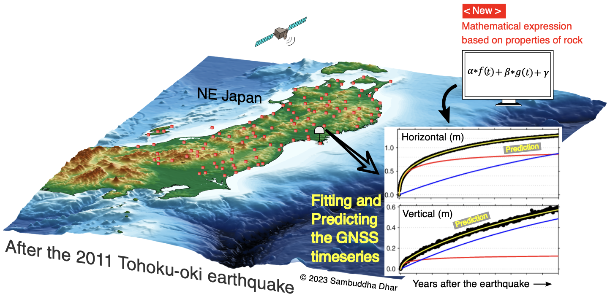
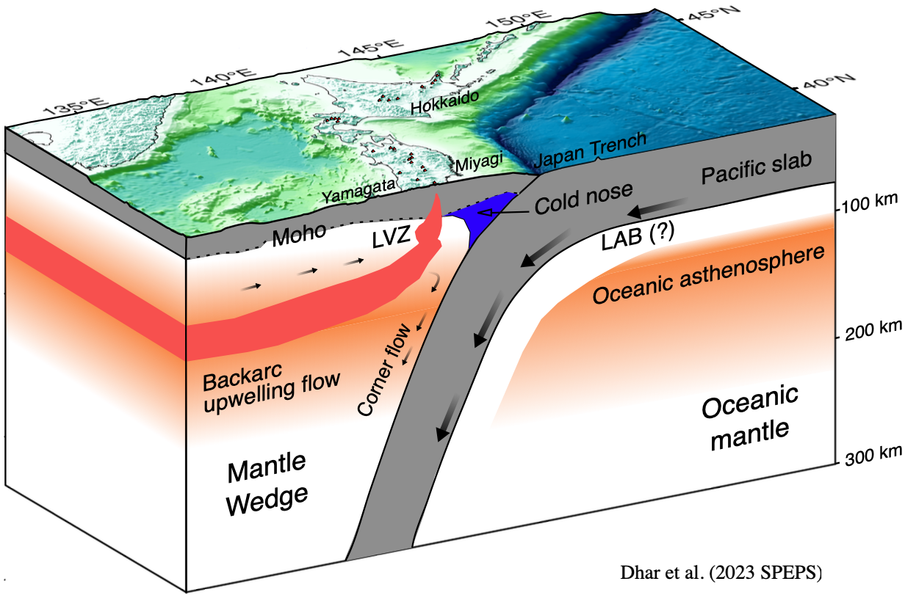
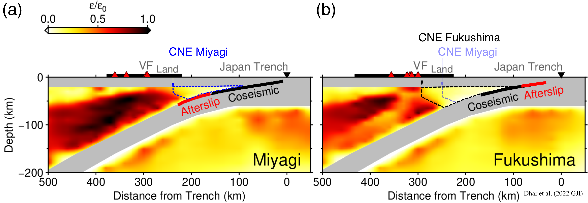

Latest research
[New research] Published on 2025-April-12
3-D rheological model of low-viscosity zone beneath Quaternary volcanoes of NE Japan.
Publication: Dhar, S., Takada, Y., & Muto, J. (2025). Inferring 3-D rheology of low-viscosity zone around quaternary volcanoes of NE Japan from postseismic deformation of the 2011 Tohoku-Oki earthquake. Journal of Geophysical Research: Solid Earth, 130, e2024JB029939. https://doi.org/10.1029/2024JB029939.
We studied the three years of GNSS observations after the 2011 Tohoku-oki earthquake. We found several local areas of surface strain contraction around the five Quaternary volcanoes: Mt. Akitakoma, Mt. Kurikoma, Mt. Zao, Mt. Azuma, and Mt. Nasu. To explain these localized surface contractions, we build the 3-D numerical model of the low-viscosity zone (LVZ) beneath the five Quaternary volcanoes. The evidence of LVZ beneath Quaternary volcanoes was indicated by magnetic and resistivity surveys in past studies. Scientists hypothesized that such LVZ causes localized ground deformation in response to the megathrust earthquake. To simulate the time-dependent deformation of viscoelastic LVZ, we used power-law Burgers rheology, which mimics the deformation behavior of mantle minerals such as olivine under laboratory experiments. We determined the shape, depth, viscosity, and arc-parallel dimension of each LVZ model constrained by our observations on the localized surface contraction. The key findings of our research are to infer the arc-parallel heterogeneities in the subsurface rheology along the volcanic front of NE Japan. In addition, we showed that the LVZ may prevail around 15-55 km of depth and vary in shape from volcano to volcano.

Figure: 3-D numerical model of low-viscosity zone beneath five Quaternary volcanoes of NE Japan (Dhar et al, 2025 JGR Solid Earth)
[New research] Published on 2023-May-03
Physics-based regression model for postseismic GNSS time series
Publication: Dhar, S., & Muto, J. (2023). Function Model Based on Nonlinear Transient Rheology of Rocks: An Analysis of Decadal GNSS Time Series After the 2011 Tohoku-oki Earthquake. Geophysical Research Letters, 50(9), e2023GL103259.
https://doi.org/10.1029/2023GL103259.
We introduce a physics-based regressional modeling for postseismic GNSS time series of megathrust earthquakes. Physics-based regression modeling refers to formulating a linear regression model (i.e., mathematical equation) where the governing physics of postseismic deformation is embedded into the decay functions. Here, we build the regression model with the physics of transient rock deformation (viscoelastic relaxation and afterslip) for predicting the 10 years of postseismic GNSS time series after the 2011 Tohoku-oki earthquake. We demonstrated the two major advantages of the physics-based regression model: First, it can fit and/or predict postseismic GNSS time series with higher accuracy. Second, it can easily decompose the displacement time series into the components of source deformation processes.

Figure: Graphics showing the application of physics-based regressional model for the postseismic GNSS time series of the 2011 Tohoku-oki earthquake in northeastern Japan (after Dhar & Muto, 2023 GRL)
Media cover:
Tohoku University Press Release
Kahoku Shimpo E-News
[New research] Published on 2023-Feb-28
How GNSS measurements reveal heterogeneous rheology of northeastern Japan?
Publication: Dhar, S., Muto, J., Ohta, Y., & Iinuma, T. (2023). Heterogeneous rheology of Japan subduction zone revealed by postseismic deformation of the 2011 Tohoku-oki earthquake. Progress in Earth and Planetary Science, 10(1), 9. https://doi.org/10.1186/s40645-023-00539-1.
The 10 years of GNSS observations after the 2011 Tohoku-oki earthquake indicate a complex pattern of postseismic surface movement around northeastern Japan. Although the horizontal surface motion of northeastern Japan is relatively simple, the vertical motion shows a substantial variation in time and space. Such complexity of postseismic surface movements is the key to understand the heterogeneous crust-mantle rheology beneath northeastern Japan. We reviewed how a decade of postseismic deformation studies unravel the structural heterogeneities of lower crust-upper mantle such as weak-oceanic asthenosphere, backarc upwelling mantle, low-viscosity zone beneath volcanic front, and stagnant “cold nose” in forearc mantle. Besides, we conducted synthetic modeling to investigate why the power-law rheology is often sought for characterizing the spatial heterogeneities of crust-mantle rheology in Japan subduction zone.

Figure: Schematic diagram for heterogeneous rheology of NE Japan revealed by decade-long geodetic observations after the 2011 Tohoku-oki earthquake (Dhar et al., 2023 SPEPS).
[New research] Published on 2022-Feb-15
Arc-parallel variation of "cold nose" geometry in northeastern Japan
Publication: Dhar, S., Muto, J., Ito, Y., Miura, S., Moore, J. D. P., Ohta, Y., & Iinuma, T. (2022). Along-arc heterogeneous rheology inferred from post-seismic deformation of the 2011 Tohoku-oki earthquake. Geophysical Journal International, 230(1), 202-215.https://doi.org/10.1093/gji/ggac063.
The GNSS observations after the 2011 Tohoku-oki earthquake show substantial variation in surface deformation patterns between the Miyagi and Fukushima areas. To understand such discrepancies in GNSS observations, we developed a 3-D rheological model incorporating two earthquake-induced processes: viscoelastic relaxation of the Japanese mantle and afterslip on the plate boundary fault. The viscoelastic relaxation and afterslip were modeled using power-law Burgers rheology and rate-strengthening frictional law, respectively. Our model indicates that the cold nose (a stagnant part of the forearc mantle) is narrower in the Miyagi region and wider in the Fukushima region.

Figure: Total viscous strain (normalized with coseismic strain changes) after 5.2 years of postseismic deformation of the 2011 Tohoku-oki earthquake (Dhar et al., 2022 GJI). A changes in cold-nose geometry between the Miyagi and Fukushima forearc mantle is illustrated.